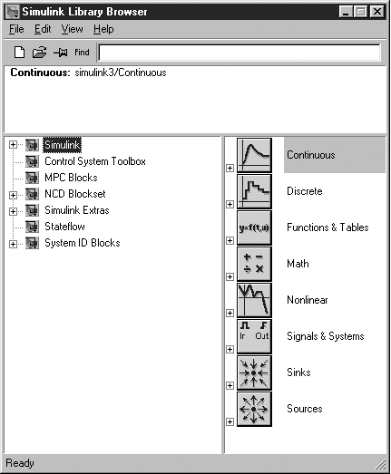
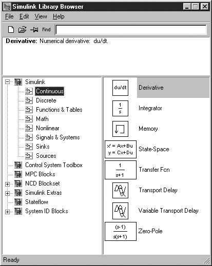
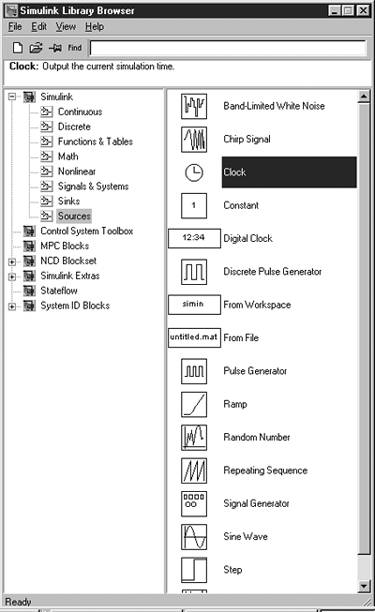
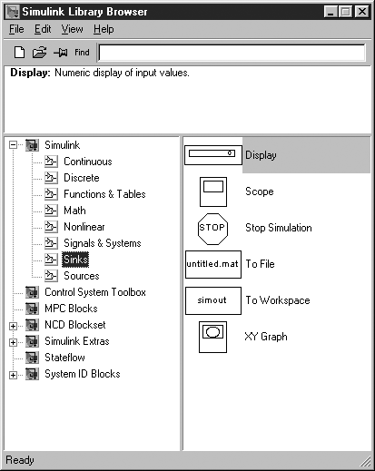

| [ Team LiB ] |
|
M2.1 BackgroundThe first step is to start up MATLAB on the machine you are using. In the Launch Pad window of the MATLAB desktop, select SIMULINK and then the SIMULINK Library Browser. A number of options are listed, as shown in Figure M2-1 for SIMULINK 4 (Release 12); SIMULINK 5 (Release 13) has a number of additional options. Notice that Continuous has been highlighted; this will provide a list of continuous function blocks available. Selecting Continuous will provide the list of blocks shown in Figure M2-2. The ones that we often use are Transfer Fcn and State-Space. Figure M2-1. SIMULINK Library Browser (Version 4.1, Release 12.1). Figure M2-2. SIMULINK Continuous blocks. Selecting the Sources icon yields the library shown in Figure M2-3. The most commonly used sources are Clock (which is used to generate a time vector) and Step (which generates a step input). Figure M2-3. SIMULINK Sources. The Sinks icon from Figure M2-1 can be selected to reveal the set of sinks icons shown in Figure M2-4. The one that we use most often is the To Workspace icon. A variable passed to this icon is written to a vector in the MATLAB workspace. The default data method (obtained by "double-clicking" on the icon after it is placed in a model worspace) should be changed from "structure" to "array" in order to save data in an appropriate form for plotting. Figure M2-4. SIMULINK Sinks. |
| [ Team LiB ] |
|